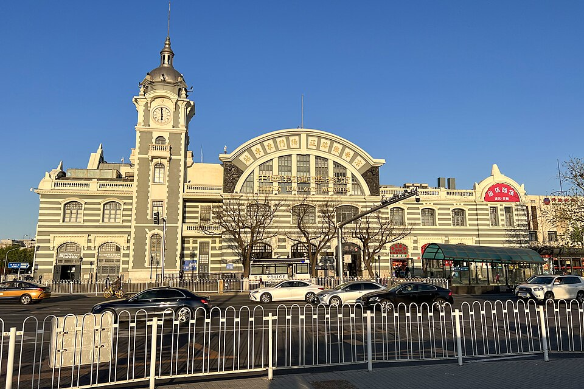
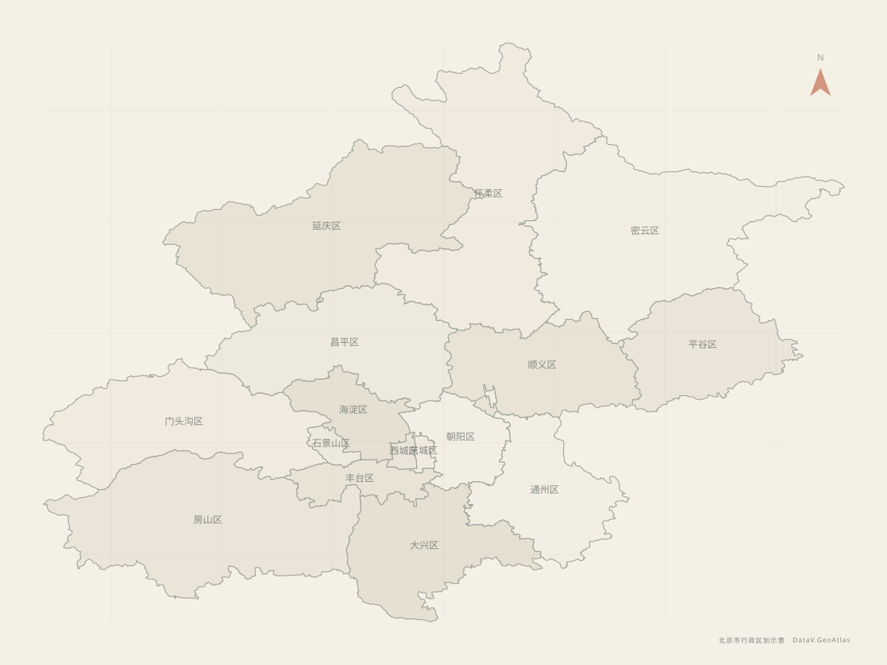
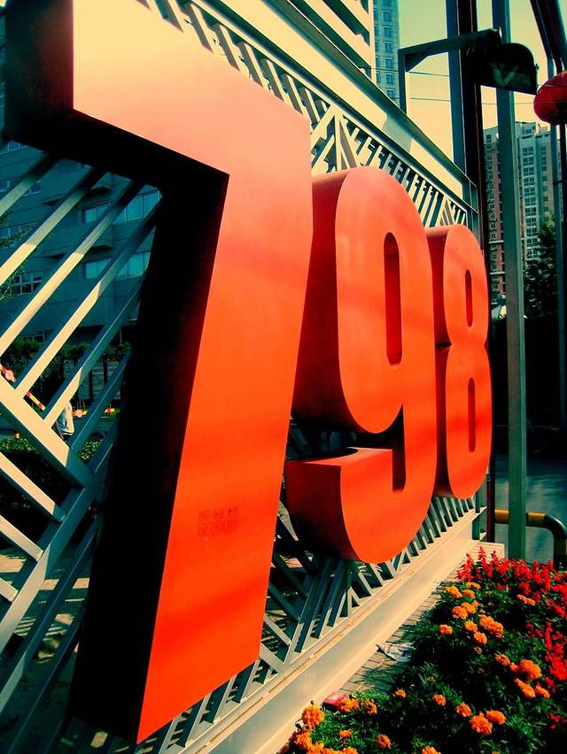
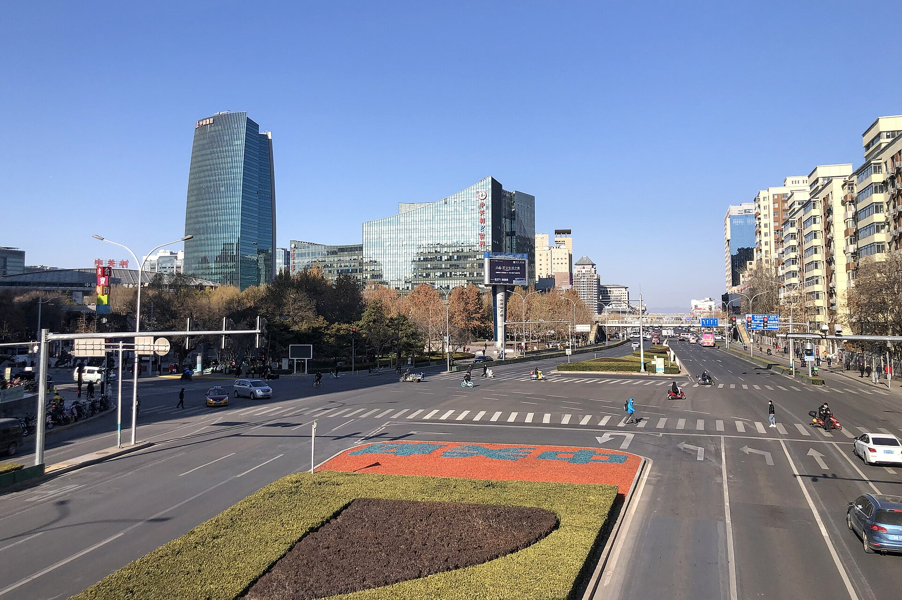
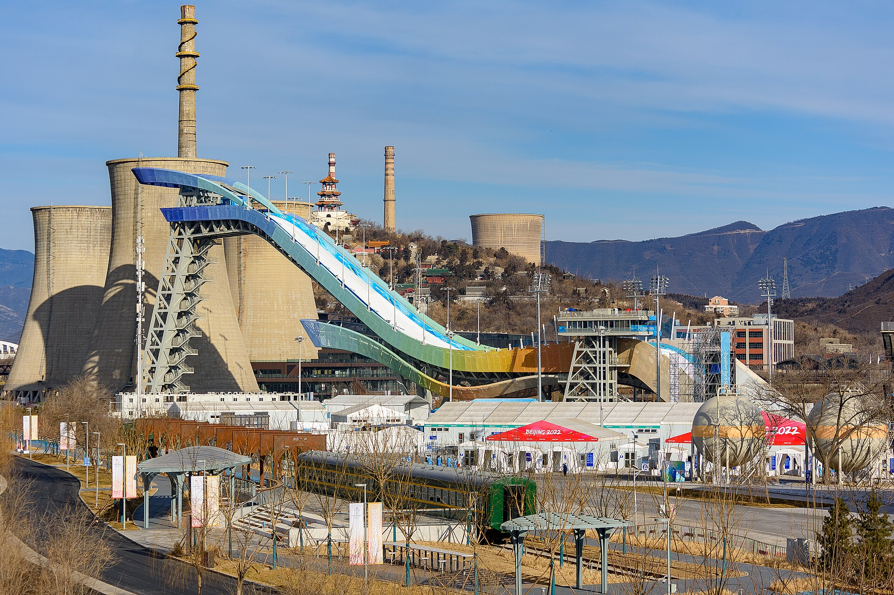

INDUSTRIAL CHRONICLE 历史 · 传承 · 现实 · 战略
一座城市的
工业年轮
从长辛店的铁路工厂，到首钢园的冬奥场馆；从三线建设的国家布局，到中关村的创新生态。工业文化不是一条简单的时间线，而是空间、制度、人物与技术的共同演进。
INTERACTIVE MAP 交互式时间地图
点击工业地标，
打开历史档案
地图用空间组织历史：同一座城市中，不同地点承担过不同阶段的工业任务。点击节点查看事件、图像、思政标签与关联资源；地图下方标签可以筛选相关节点；地标依据公开地址近似标注，全市性事件会落实到一个或多个具体实例。

按思政元素筛选
选择关键词，观察哪些历史节点与它相关。
FOUR DIMENSIONS 四个理解维度
同一段工业史，
可以从四个方向阅读
历史维度关心来路，传承维度关心记忆，现实维度关心创新现场，战略维度关心城市与国家的关系。四者共同构成完整的工业文化认识框架。

维度 B 传承维度
工业遗产与
工匠精神
工业遗产的价值，不只在它曾经生产什么，更在它如何塑造一座城市。高炉、铁轨、厂房与老字号招牌，都是劳动者经验、技术和审美的物质载体。
从798的旧厂房更新，到景泰蓝的掐丝点蓝，再到博物馆里被重新讲述的机器，传承意味着保留记忆，也意味着让旧空间、旧技艺进入当代生活。
798艺术区更新
景泰蓝传统工艺传承
工业遗产城市文化记忆


PUBLIC MEMORY 公开影像与人物
让历史不只停留在
年份与结论里
劳模访谈、工业纪录片和工人回忆能够补充档案之外的情感与细节。这里精选具体公开视频，避免使用无授权素材。